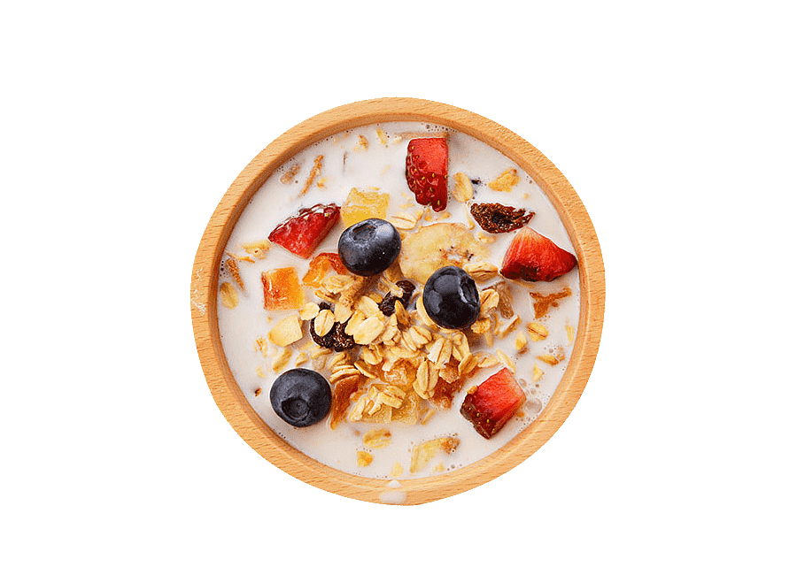
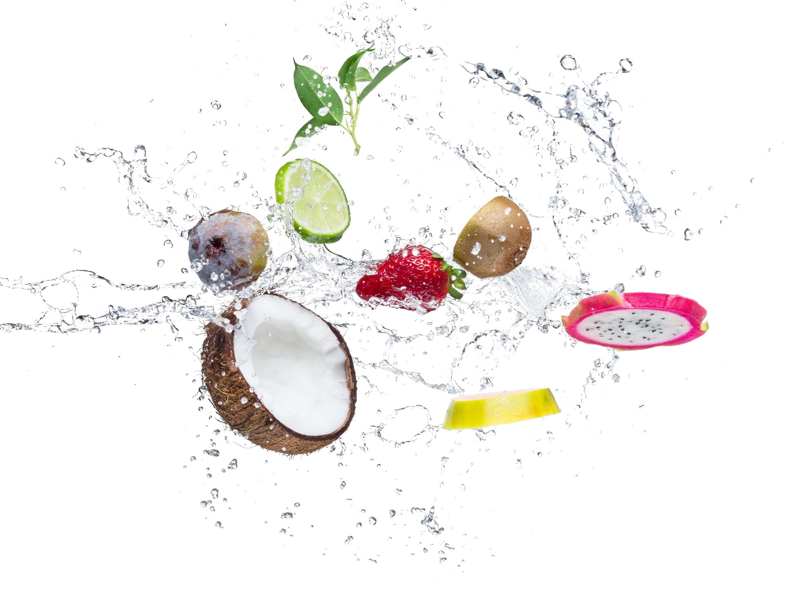
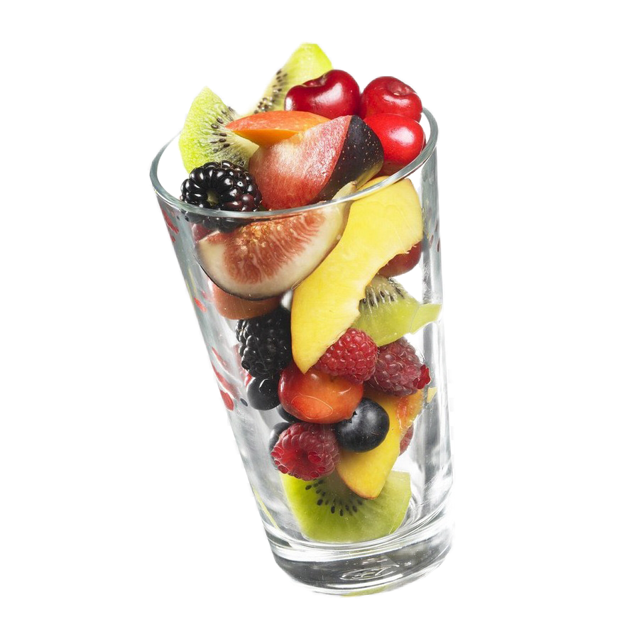

- Boiled white round - grain rice
- Milk
- Unsault butter
- Blueberry
- Strawberry
- Sea salt
Step by step cocking recipe
step 1
Boil the rice in water until it is half cooked
step 2
Boil the milk, add the rice cooked until half cooked, boil until tender,
add salt, sugar or jerusalem artichoke syrup, butter, mix
step 3
Put the porridge on a plate and decorate with blueberries and strawberries


